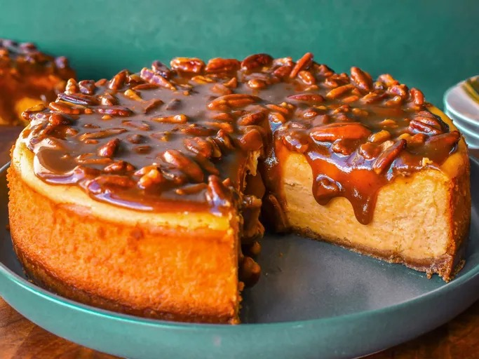

Home
Sweet Potato Cheesecake

This sweet potato cheesecake has a smooth, creamy texture with a buttery crumb crust and delectable pecan praline topping.
Perfect for a rich and flavorful fall or winter dessert.
Ingredients
- 1 ¼ cups graham cracker crumbs
- ¼ cup white sugar
- ¼ cup butter, melted
- 1 ½ cups canned sweet potato puree
- 3 (8-ounce) packages cream cheese, softened
- ⅞ cup white sugar
- ⅓ cup sour cream
- ¼ cup heavy whipping cream
- 3 large eggs, room temperature
- ¾ cup packed brown sugar
- ¼ cup butter for topping
- ¼ cup heavy whipping cream for topping
- 1 cup chopped pecans for topping